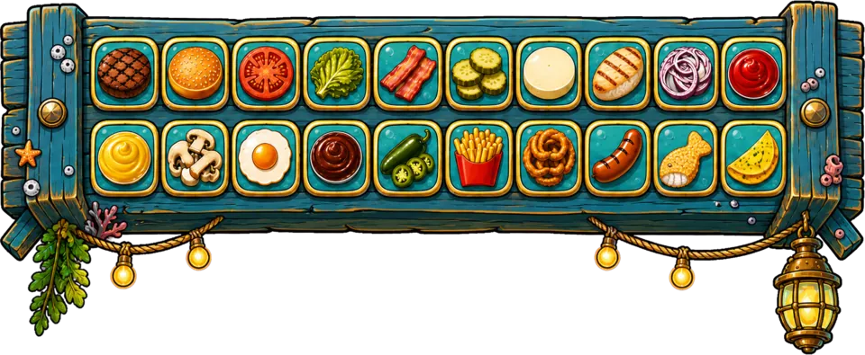

Nine modes
Stack Rush, Press Rush, Order Rush, Current Sort, Orbit Stack 3D, Stack 3D, Round 3D, Balance Tower 3D and Slice & Fit 3D, chosen from a mode-select menu.
Tap to stack. Serve the order.
Drop ingredient layers onto a growing burger, keep them lined up and match recipes as you build. Nine modes change how the stack moves and what you are chasing.
Nine modes, 20 ingredients and a 166-recipe catalog are built in the Unity project; there is no public build yet.
A layer slides over the stack and you tap to drop it. In the stacking modes you can pick the next ingredient from the tray.
Overhang is cut away, so a sloppy drop leaves a narrower stack. A near-centred drop counts as Perfect and builds a combo.
Layers that match a recipe complete it. In Order Rush, each completed order adds time and a wrong ingredient costs time.
Stack Rush, Press Rush, Order Rush, Current Sort, Orbit Stack 3D, Stack 3D, Round 3D, Balance Tower 3D and Slice & Fit 3D, chosen from a mode-select menu.
Stack Rush has an optional Expert modifier that moves layers along two axes.
Patty, bun, tomato, bacon, sauces, fries and more, with a recipe catalog of combinations of two to seven ingredients.
A shift timer grows with every completed order and shrinks on a wrong ingredient.
Underwater and sky kitchen backdrops scroll as the stack grows, with a matching ingredient tray and UI art.
A profile saved on the device tracks daily and weekly challenges and unlocked ingredients.
These are goals for the project, not release dates.
Art and interface assets from the Unity project, not gameplay captures.

A tap-to-stack arcade game with a burger theme. You drop ingredient layers onto a stack, keep them aligned and complete recipes. It has nine modes, including timed order rushes and 3D variants.
Not yet. Burger Stack is a prototype with no public build. Android and iOS are the intended platforms.
Follow WillowinWorlds on the social channels linked on this page, or email willowinworlds@gmail.com to ask for updates on Burger Stack.
Voting will open on the studio's channels, so following WillowinWorlds is the way to take part.